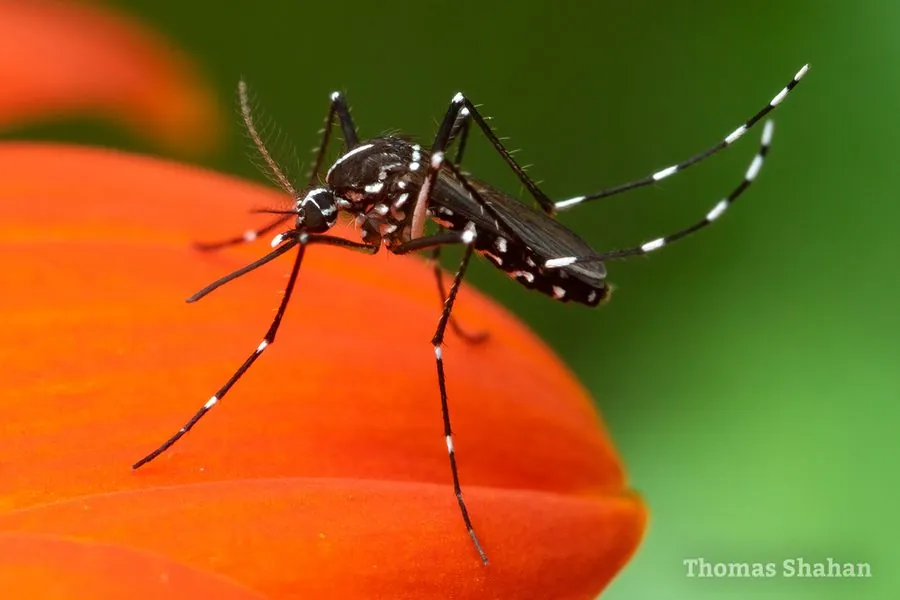

昆虫 · 动物界
白纹伊蚊 Aedes albopictus

俗称“花蚊子”的亚洲伊蚊，胸部有白色纵纹、腿上有白环，白天活跃，能传播登革热和寨卡病毒等疾病。
- 分类
- 门节肢动物门纲昆虫纲目双翅目科蚊科属伊蚊属
- 栖息环境
- 城镇、庭院、森林边缘，幼虫孳生于花盆托盘、轮胎等小型积水
- 地理分布
- 原产于亚洲，现扩散至全球热带、亚热带及部分温带地区
- 保护级别
- 暂无评估
物种志
白纹伊蚊成虫体长 4–7 mm，体色黑色。它的胸部背面有一条明显的白色纵纹，因此得名；足上有黑白相间的环纹，翅膀透明，口器细长；雌蚊吸血，雄蚊主要取食花蜜。
白纹伊蚊原产于亚洲，如今已扩散到全球热带、亚热带甚至温带地区，栖息于森林边缘、城镇、庭院和容器积水处。它的卵耐旱，可附着在容器内壁度过干燥期，遇水后孵化；幼虫生活在花盆托盘、废轮胎、竹筒等小型积水中，发育快，约一周到两周即可羽化。与多数蚊类不同，白纹伊蚊白天活动，清晨和傍晚最活跃，雌蚊可多次吸血，能传播登革热、寨卡病毒、基孔肯雅热等疾病。控制其孳生地、清除小型积水是防制的关键。
形态与习性
- 食性雌蚊吸血，雄蚊取食花蜜
- 体长成虫 4–7 mm
- 识别特征胸部有一条白色纵纹，足上有白环
- 活动节律白天活动，清晨和傍晚最活跃
- 繁殖卵耐旱，孳生于小型容器积水中
- 疾病传播登革热、寨卡病毒、基孔肯雅热等
趣味知识
- 白纹伊蚊胸部有一条白色纵纹，因此被称为“花蚊子”。
- 它的卵能耐干旱，遇水后即可孵化成幼虫。
- 白纹伊蚊白天活动，与多数夜间活动的蚊子不同。
- 它是登革热、寨卡病毒和基孔肯雅热的重要传播媒介。